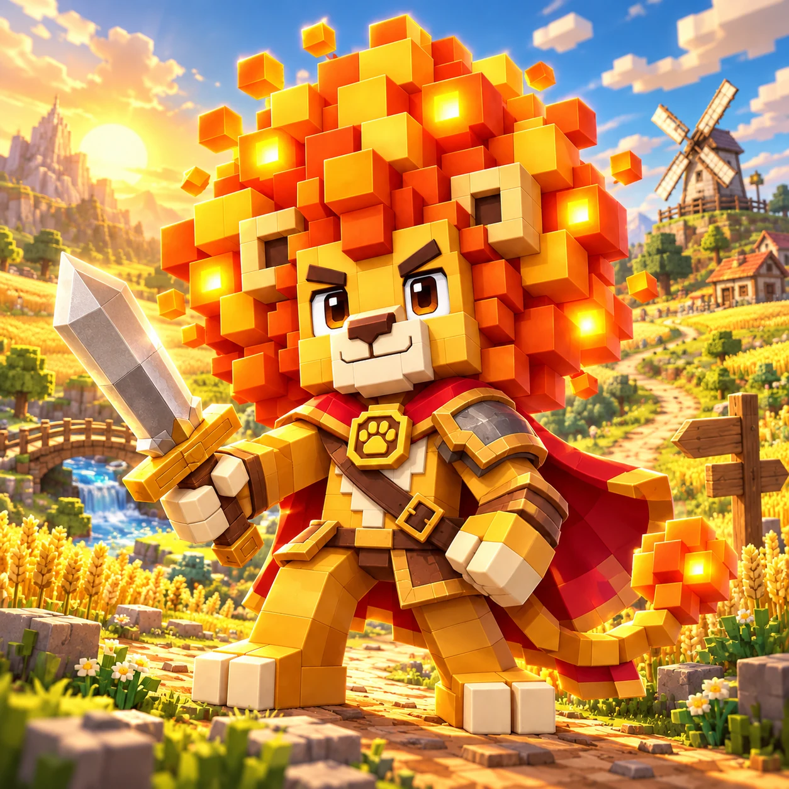

仙旅傳說

Explore distinct regions, read enemy attacks and shape your build. Leo, the lion swordsman, is the launch character; the roster can expand.
Map 1 / 60
仙旅傳說
Explore distinct regions, read enemy attacks and shape your build. Leo, the lion swordsman, is the launch character; the roster can expand.
Restore the paths
Restore each map’s objectives and challenge regional guardians. After completing the goals, keep hunting or take the marked exit. Optional roaming bosses can appear on every map, with only one active at a time.
How to play
Move with the shared joystick or WASD. Nearby attacks are automatic. Tap an enemy to lock it, dodge marked heavy attacks, and interact with restored supplies. Pick up equipment within 2m with F or the on-screen control. After completing the objectives, keep hunting or travel through the marked exit. Enable auto hunt to hunt from your current position and return to that point.
Controls and rules
Space: dash · F: interact / pick up · E: potion · R: anchored auto hunt · Tab: target · Esc: pause. Automatic skills need a valid target, SP and a ready cooldown.
Local progress
Progress is saved in this browser. Clearing site data can remove it. Export a copy in Equipment. Sixty authored maps span twelve regions; this internal build is still being tested.